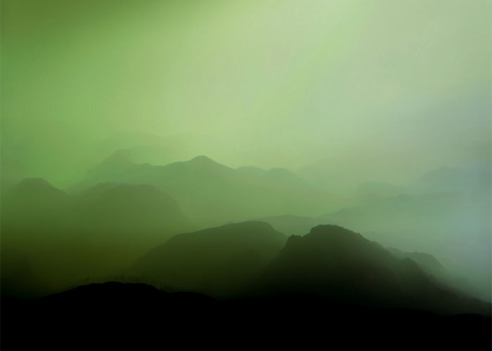

exhibition archive |
||
Scapesby Elisabeth Bernstein Jan 28 – Mar 6, 2010 Opening Reception: Gallery hours: Images Above: press |
The Wild Project is pleased to present Scapes an installation of photographs by Elisabeth Bernstein. Bernstein’s seemingly familiar landscapes, at first glance, look as though they could be taken from places throughout the world. However, after close examination the viewer will notice that they have been fabricated for the camera. Using paint pigments and strategic camera placement to confound our expectations of weight and scale her images resemble mountainous terrains from an indeterminate time. These images move beyond being a series of unusual observations towards a conceptual territory where the subject is not quickly deciphered but gradually made more tangible through it’s range of possible states. Elisabeth Bernstein (b. 1980) was raised between New York and Washington, D.C. and is currently based in New York. Bernstein graduated from Brown University in 2003 with a BA in Visual Arts and Political Science. Her work has been exhibited in group shows nationally. This is her first solo exhibition. The Wild Project, an environmentally conscious venue for contemporary theater, film, and visual arts, is dedicated to supporting the arts by offering space and resources to emerging artists. The first gallery and theatre space in New York City to have a green roof, Wild Project’s programming intends to cultivate a supportive artistic network, explore innovative and thoughtful approaches to art making and by doing so enrich the local community. For more information please contact Hilary Schaffner at 212. 228.1195 or info@thewildproject.com |
|
exhibition archive |
|||
| 2016 | 2015 | 2014 | 2013 |
| 2011 | 2010 | 2009 | 2008 |